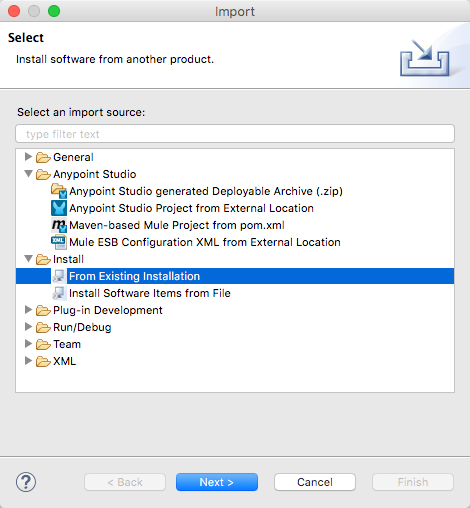

Anypoint Studio June 2015 with 3.7.0 Runtime Release Notes
Skip to: Migration Guide
June, 2015
MuleSoft is pleased to announce the release of Anypoint Studio version June 2015 with the Mule 3.7.0 Runtime. This release features support for DataWeave, MuleSoft’s new data transformation and query language. It also includes the ability to define custom metadata for message processors, a new Maven repository browser for connector dependencies, and many bug fixes.
Current Release Versions
| Enterprise Runtime | Community Runtime | |
|---|---|---|
ESB Runtime |
3.7.0 EE |
3.7.0 CE |
Anypoint Studio |
June 2015 Release |
|
Management Console |
n/a |
|
Mule DevKit |
3.7.0 |
|
APIkit |
version: 1.7.0 |
|
New Features and Functionality
DataWeave Language and Transformer
This release introduces a new language, called DataWeave, which is a simple, powerful way to query and transform data inside of Mule. It provides JSON-like language that’s purposefully built to make writing transformations as fast as possible and highly maintainable over the long term. It supports a variety of transformations, from simple 1 to 1 mappings, to more elaborate mappings including normalization, grouping, joins, partitioning, pivoting and filtering.
The language is tightly integrated with Mule ESB and Anypoint Studio. There is a DataWeave Transformer that allows you to use the language to query and transform data. It fully supports DataSense, allowing you to leverage metadata from connectors, schemas and sample documents to more easily design your transformations. DataSense provides content assist while you are coding and scaffolds your mappings to help make writing transformations fast and easy. The editor also provides real time feedback as you code, processing sample inputs into sample outputs that are constantly updated as you write your transform.
DataWeave replaces our current DataMapper component as our recommended way of doing data transformation. It comes with a number of advantages over DataMapper, including:
-
Support for more complex transformations
-
Improved performance
-
Better error reporting
-
Support for multiple inputs and outputs
-
Support for larger than memory payloads
-
Random access to input documents
Currently DataWeave does not yet support these features of DataMapper, which will be addressed in future releases:
-
A graphical drag and drop editor for creating DataWeave transforms
-
Excel and fixed width formats
DataMapper continues to be fully supported in all current and future versions of Mule ESB 3.x.
Additional Improvements
-
You can now supply design time metadata to message processors and declare the type of your payload, ensuring that Studio can provide you content-assist capabilities and that you have visibility into your payload everywhere.
-
When adding dependencies for connectors, you can now directly search the Maven repository to find the appropriate dependency and Studio automatically adds it to your POM.
-
Support for Mule 3.7, including:
-
NTLM authentication for the HTTP request configuration
-
Preemptive authentication for HTTP
-
Set payload, set variable, and set record variable message processors support for setting the mime type.
-
WS-Consumer support for signing and encrypting payloads with WS-Security
-
Support for the new 'non-blocking' process strategy
-
Support for specifying the default processing strategy
-
-
The underlying Eclipse runtime was upgraded to 4.4.2
Migration Guide
This section presents configuration considerations you may want to adjust when migrating from a previous version of a Mule runtime, or previous version of Studio. Contact MuleSoft Support if you have a question about a specific migration activity or concern.
-
Mule ESB 3.7.0 is supported from Anypoint Studio June 2015 Release and onwards. Older Mule ESB runtimes can also be installed in the new Anypoint Studio release.
-
APIkit 1.5.1 only works in runtimes whose versions are less than 3.6.0. APIkit 1.6.0 works in the 3.6.0 runtime and above (see STUDIO-5955 below).
-
Java 7 is required for Anypoint Studio. If you are deploying to Java 6 runtimes, you can continue to configure Java 6 as the Java runtime for your project.
-
From the previous version of Studio (5.1.1) there is no special migration needed, but when coming from older versions, it’s recommended that you create a new workspace to host projects built with this new version. When opening a previous Workspace with projects that were created with Studio 5.1.0 or older, and which has metadata stored in disk, Studio asks you to perform an update to all the projects so that the Metadata Manager can handle the types and to show the types in your project. Note that performing this conversion might imply loosing previously defined run configurations.
If you wish to install a previous runtime or a community runtime, follow the instructions in Adding Community Runtime to your new instance of Studio.
|
You can easily import all of the external components that you had installed in your old version of Anypoint Studio through a single action. This includes connectors, runtimes, and any other type of extension added through the Anypoint Exchange or the Help → Install new software menu, as long as there are no compatibility restrictions. Do this by selecting File→Import and then choose Install→From existing installation.

Then specify the location of your old version of Anypoint Studio in your local drive. |
Hardware and Software System Requirements
The 3.7.0 release does not change the hardware and software system requirements established by the 3.6.1 Runtime.
MuleSoft recommends a minimum of 4 GB RAM on a developer workstation. As applications become complex, consider adding more RAM. Contact MuleSoft Support with any questions you may have about system requirements.
Deprecated in this Release
DataMapper is deprecated and superceded by DataWeave. DataMapper continues to be fully supported in all current and future versions of Mule ESB 3.x, however DataMapper will be removed in Mule 4.0. We recommend that if customers wish to take advantage of the new capabilities of DataWeave or if they start new projects, they upgrade now. However, if you have no pressing need to take advantage of new functionality, we recommend you wait until Mule 4.0 is released.
If you want to deploy a Mule project that containst a DataMapper transformer in it, consider the following:
-
When deploying through Anypoint Studio, it should still work normally
-
When deploying to CloudHub, it should also work out of the box
-
However, when deploying to Mule ESB Standalone 3.7.0, download and add a Including the DataMapper Plugin.
JIRA Issue Reference
New Features and Functionality
| Issue | Description |
|---|---|
STUDIO-5956 |
DataSense in Background - Improve cache locking. |
STUDIO-5957 |
DataSense in Background - Create a serial background process queue for DataSense jobs |
STUDIO-5959 |
DataSense in Background - Error handling |
STUDIO-5960 |
DataSense in Background - UI feedback |
STUDIO-6013 |
Sign in to platform for exchange and CloudHub |
STUDIO-6025 |
Labels for fields don’t render in DataSense Explorer |
STUDIO-6221 |
SVR - Apply light theme to Studio |
STUDIO-6301 |
Dark\Light Theme - Change style in Properties Editors |
STUDIO-6303 |
Dark\Light Theme - Adapt Canvas for new Layout and new Icons |
STUDIO-6338 |
Dark Theme - Enable icon switching with themes |
STUDIO-6384 |
Metadata Manager |
STUDIO-6462 |
Custom Metadata Definition: add support for Dynamic Types |
STUDIO-6535 |
Sample data needs better file names |
STUDIO-6536 |
Transform: add formatting to Preview and color highlighting |
STUDIO-6655 |
Add <non-blocking-processing-strategy name="foo"/> |
STUDIO-6673 |
Improve CSV Support in DataWeave |
STUDIO-6715 |
Migrate DataSense caches from existing projects |
Bug Fixes
| Issue | Description |
|---|---|
STUDIO-459 |
Unable to add a response when creating a second flow in the same mflow |
STUDIO-3092 |
"Message Chunk Splitter" description is from "Collection Splitter" |
STUDIO-5553 |
New Launcher - Redeploy fails |
STUDIO-5859 |
3.6 Studio Help provides incorrect info |
STUDIO-5870 |
Deploy to CloudHub - Some fields are not cleaned after changing project |
STUDIO-5872 |
Deploy to CloudHub - Environment behavior is not clear |
STUDIO-5876 |
HTTP connector configuration is reset when changing display name by using the direct edit |
STUDIO-5946 |
New Containers: I can drag and drop a flow inside of the Source area of another flow |
STUDIO-5948 |
Undo doesn’t work in script editors |
STUDIO-5968 |
DataMapper is not being added automatically to the pom file when project is Maven based |
STUDIO-5971 |
When adding dependencies automatically to the pom file the <inclusion> element is not added |
STUDIO-5973 |
src/main/api directory isn’t being added as resource folder in Maven projects with APIkit |
STUDIO-5984 |
HTTP request - RAMLs with custom baseUriParameters are not supported. Only {version} is correctly processed |
STUDIO-5985 |
HTTP request - Set RAML fields to blank when changing RAML |
STUDIO-5993 |
Subflows are not given unique names when dragged to canvas |
STUDIO-5995 |
HTTP request - NPE when clicking OK in configuration without filling any field |
STUDIO-6001 |
Debugger - When deleting a MP with breakpoints, they end up in the next MP |
STUDIO-6007 |
Poll - No Polling option selected by default when opening the editor the first time |
STUDIO-6010 |
Debugger - Evaluate Mule expression window - Remember Location and Size do not work |
STUDIO-6017 |
HTTP request - Default Host and Port only populated after clicking in BROWSE button |
STUDIO-6023 |
"Refresh metadata" throws NullPointerException |
STUDIO-6040 |
Studio deletes all SQL queries in a project |
STUDIO-6049 |
Support deploying new Siebel connector |
STUDIO-6052 |
Global configuration - Connector config is not created in the selected project |
STUDIO-6055 |
Cannot launch applications using Maven deployment |
STUDIO-6098 |
Import/Export - Last Export destination path saved in the exported project |
STUDIO-6102 |
DataSense in Background - Query builder - Empty first time is opened before fetching metadata |
STUDIO-6103 |
HTTP connector - Clicking on the Refresh metadata link does nothing when the editor has empty fields. |
STUDIO-6105 |
DataSense in Background - NPE when Changing Operation |
STUDIO-6118 |
DataSense in Background - When an editor is opened error message is displayed in wrong place |
STUDIO-6119 |
DataSense in Background - Error message is displayed more than once |
STUDIO-6120 |
DS in Background - Fix SAP Metadata retrieval |
STUDIO-6121 |
NPE when launching an application with old server |
STUDIO-6123 |
DataMapper - Generating wrong input metadata for datasense when using a collection of Pojos as input. |
STUDIO-6126 |
Studio Login - Register Now link doesn’t work |
STUDIO-6129 |
DataSense in Background - Domain XML config changed to project XML config after editing connector from error message |
STUDIO-6133 |
Metadata propagation isn’t working across sub flows |
STUDIO-6135 |
Studio UI contains dialog to add interceptors but JSON schema validator doesn’t support them |
STUDIO-6139 |
DataSense in Background - Error notifications dialog loses buttons when the message is too long. |
STUDIO-6145 |
DataSense in Background - When changing Metadata tree focus NPE is displayed |
STUDIO-6146 |
HTTP Inbound endpoint - After editing configuration port is downloaded to XML |
STUDIO-6153 |
Datasense - Problem when comparing Datatypes of actual and expected Metadata Propagation. |
STUDIO-6154 |
Datasense - Problem when comparing Datatypes of actual and expected Metadata Propagation. |
STUDIO-6155 |
Import/Export NPE when exporting projects |
STUDIO-6157 |
DataSense in Background - MP’s that use metadata cache for autocompletion are not refreshed after fetching metadata |
STUDIO-6162 |
Metadata Propagation - StackOverflow exception when filtering metadata coming from batch in the metadata tree |
STUDIO-6163 |
Query builder - Fields not recognized after clearing metadata cache |
STUDIO-6165 |
cache TTL incorrectly noted as being in seconds |
STUDIO-6177 |
Studio Login - NPE when deploying to CloudHub using a domain with 2 letters |
STUDIO-6185 |
Login - Support for custom URLs in the preferences |
STUDIO-6186 |
Inbound endpoint API gateway: After editing configuration port is downloaded to XML |
STUDIO-6193 |
Studio Login - Domain criteria is not displayed completely in CloudHub deploy |
STUDIO-6195 |
Studio Login - Add a message to the URL preferences to prevent errors |
STUDIO-6196 |
Studio Login - Login is requested several times in CloudHub dialog |
STUDIO-6198 |
Studio Login - Remove support for custom URLs in preferences |
STUDIO-6204 |
Studio Login - CloudHub preferences are not displayed anymore |
STUDIO-6079 |
DataSense enabled fields are rendered incorrectly |
STUDIO-6203 |
Studio Login - User name not displayed completely |
STUDIO-6269 |
Transform: when deleting a transform message processor you should be prompt to delete the file |
STUDIO-6311 |
Upgrading Studio plugin causes missing Maven support in Eclipse Luna |
STUDIO-6321 |
SAP native library is not recognized eventually |
STUDIO-6365 |
Transform: When having errors in the DW script an ErrorMaker is not placed over the message processor |
STUDIO-6416 |
Transform: The Message Processor is not propagating POJO Metadata |
STUDIO-6427 |
Transform: Problems with Error Markers in the scripts |
STUDIO-6489 |
Custom Metadata Definition: add better error message for failing cases |
STUDIO-6492 |
Visual Redesign - Icons from the Connectivity Explorer not changing when changing themes |
STUDIO-6506 |
Transform: Keyboard actions are always tied to the middle editor |
STUDIO-6541 |
Transform: Scaffolding is not generating some fields |
STUDIO-6544 |
Rename flow action should avoid writing unsupported charters. |
STUDIO-6557 |
Transform: autocompletion is not adding namespace declaration |
STUDIO-6563 |
Metadata Caches are not refreshed if there is a change in the file system. |
STUDIO-6569 |
Transform: Save button does not update the XML even when the script is inline |
STUDIO-6570 |
Maven: Remove DataMapper dependencies for 3.7 from default POM |
STUDIO-6573 |
Custom Metadata Definition - Error saving to the DataSense cache :ConcurrentModificationException |
STUDIO-6590 |
MIME type for ISO-8859-1 is shown as ISO Latin-1 in UI |
STUDIO-6591 |
Environment variables in mule-project.xml: "=" is added to the mule-app.properties |
STUDIO-6606 |
Custom Metadata Definition: relative path do not work |
STUDIO-6612 |
Support defining metadata for connectors that work with byte streams |
STUDIO-6626 |
Custom Metadata Definition - CSV table is not displayed in linux |
STUDIO-6631 |
NullPointerException after mavenizing project |
STUDIO-6633 |
Transform: As :iterator doesn’t contribute to the Metadata |
STUDIO-6634 |
Transform: When using autocomplete, Enum types are displayed as null |
STUDIO-6639 |
Transform Message Processor - When pressing CMD+S many times quickly, errors are thrown. |
STUDIO-6642 |
Multi Level keys are not loaded when selecting an existing Global Configuration |
STUDIO-6643 |
Transform: problem with Preview performance with Java output |
STUDIO-6657 |
Transform: CMD + S it’s generating and StarckOverflowError |
STUDIO-6658 |
Http outbound endpoint not generating the right attributes for headers |
STUDIO-6660 |
Deploy to CloudHub - clubhub.url system property not being read |
STUDIO-6662 |
Custom Metadata Definition - Validation error when selecting file |
STUDIO-6663 |
Custom Metadata Definition - Metadata Manager: Parent element Name is not deleted |
STUDIO-6665 |
Custom Metadata Definition - Metadata tree not refreshing when refreshing Metadata types |
STUDIO-6674 |
Metadata Manager - Not possible to refresh a Java and CSV type. NPE is thrown. |
STUDIO-6675 |
Metadata Manager - Metadata tree is not updated automatically when a metada type refresh is done. |
STUDIO-6677 |
Custom Metadata Definition - Finish button enabled with any unexisting file name |
STUDIO-6678 |
Metadata Custom Definition - Metadata Manager: Ask confirmation before deleting a type |
STUDIO-6682 |
Maven - Depedencies not being automatically refreshed when mavenizing a project |
STUDIO-6683 |
Custom Metadata Definiton - Context menu not displayed in Metadata Manager |
STUDIO-6684 |
Light Theme - First arrow between a MS and a MP is wrong displayed. |
STUDIO-6686 |
Custom Metadata Manager - CSV fields defined by user not displayed in Metadata Manager |
STUDIO-6687 |
Transform: missing key in autocompletion (B2B) |
STUDIO-6690 |
Custom Metadata Definition - Metadata Manager does not support Domains |
STUDIO-6694 |
APIKit plugin does not build successfully |
STUDIO-6695 |
Transform: preview is not showing errors when the output type is application/java |
STUDIO-6699 |
Visual Redesign - Change style of line in properties editor |
STUDIO-6701 |
Filtering scaffolding tree doesn’t keep your previous selection. |
STUDIO-6702 |
Custom Metadata Definition - ID reference in XML is deleted when removing last Custom definition from MP |
STUDIO-6704 |
Transform: configuration button overlaps the text in the input view |
STUDIO-6705 |
Custom Metadata Definition: NPE when using XML example |
STUDIO-6706 |
Add application/csv to the MIME Type list in the File Message Processor |
STUDIO-6708 |
Export with Metadata is not adding the .studio folder |
STUDIO-6709 |
Transform: Problem with filtering tree in scaffolding |
STUDIO-6710 |
Studio Visual Redesign - Global icons don’t update when changing to Light theme |
STUDIO-6711 |
SVR - Default light theme icon should be used when no specific light theme icon is present. |
STUDIO-6712 |
Metadata propagation getting overwritten by DataWeave |
STUDIO-6713 |
Transform: keyboard shortcuts collide with Java Editor |
STUDIO-6720 |
Metadata Catalog - Connector and project reset metadata should work nicely with the new catalog format on disk |
STUDIO-6725 |
Transform: Mock for Java objects is not working |
STUDIO-6726 |
Custom Metadata Definition - Limit the characters that can be entered for a new custom type name |
STUDIO-6729 |
Unknown MP label is not wrapped when having a long text |
STUDIO-6735 |
Transform: Fix text in class not found error |
STUDIO-6736 |
Transform: Change Execution validations from Error to Warning |
STUDIO-6740 |
Transform: Runtime warnings are added to the latest tab (mapping) regardless of where they belong |
STUDIO-6741 |
Transform: Select all in scaffolding is not working |
STUDIO-6743 |
Transform: Scaffolding should add keys that are numbers between quotes |
STUDIO-6744 |
Transform: Unexpected Error when deleting multiple Message Processors with a Trransform |
STUDIO-6746 |
Custom Metadata Definition - Cannot add fields to types CSV based |
STUDIO-6751 |
Validation missing when running a project with Errors |
STUDIO-6754 |
DataSense Migration for existing projects: Types migrated are not reflected in Metadata Manager |
STUDIO-6756 |
Transform: Output combo is misaligned |
STUDIO-6758 |
Metadata Catalog Management - Problems with domains and type management. |
STUDIO-6762 |
Transform: Scaffolding it’s adding unchecked siblings |
STUDIO-6763 |
Transform: Problem with autocompletion in some elements |
STUDIO-6764 |
Transform: Problem pass trough in POJO |
STUDIO-6765 |
Transform: Enlarge scaffolding default window size |
STUDIO-6766 |
Query builder: Cannot select all fields using the checkbox |
STUDIO-6770 |
Cannot open Manage Metadata Types right after importing a project |
STUDIO-6777 |
Fix key used in sample data provider to get the reader object |
Improvements
| Issue | Description |
|---|---|
STUDIO-781 |
Would save time to be given the option to create a class in addition to selecting an existing class inside a widget dialog box (for example, Component) |
STUDIO-2462 |
The Service class field should be moved to the JAX-WS client group |
STUDIO-3205 |
Connections View usability improvements |
STUDIO-3852 |
Property editor should open for new components dropped into workspace |
STUDIO-4227 |
DataMapper: Deleting a filter in visual map leaves the folder collapsed |
STUDIO-4493 |
Flow Ref: Display name should display name of referenced flow. |
STUDIO-5645 |
WS Consumer support for the new HTTP connector |
STUDIO-5804 |
Feedback icon should be place over the arrow |
STUDIO-5907 |
Remove 'connector' word from global TCP Connector and WMQ XA Connector |
STUDIO-5926 |
Change response arrow color |
STUDIO-5933 |
Change icon for "Mule Properties View" Tab (unselected state) |
STUDIO-5949 |
Remove "View" from Properties and Debugger Tab Titles |
STUDIO-5982 |
HTTP request - root RAML should be detected automatically |
STUDIO-5998 |
Add drag and drop functionality for ClassNameField editors. |
STUDIO-6008 |
Ability to select MP in visual editor and bring up its XML code |
STUDIO-6035 |
Studio should warn you or save automatically if you run an unsaved Mule project |
STUDIO-6041 |
DataSense in Background - Cancel all jobs if first one fails (for a given set of credentials) |
STUDIO-6043 |
DataSense in Background - Automatically refresh DataSense explorer when the user changes the object type |
STUDIO-6046 |
DataSense in Background - Show visual cue on types drop down if something fails |
STUDIO-6071 |
Studio Login - Login Web Window |
STUDIO-6072 |
Studio Login - Preference page |
STUDIO-6073 |
Studio Login - Deploy to CloudHub |
STUDIO-6140 |
DataSense in Background - Make error text selectable. |
STUDIO-6149 |
DataSense in Background - Make the DataSense explorer tree refresh every time a job finishes. |
STUDIO-6150 |
DataSense in Background - Make the DataMapper editor refresh on job completion |
STUDIO-3484 |
New Properties Editors: when pressing CMD + S or CTRL + S the changes in the editor should be reflected in the file, and the file should be saved |
STUDIO-6233 |
DF - Remove input label |
STUDIO-6234 |
DF - Split the payload/vars tree from the constant and functions |
STUDIO-6296 |
Transform: add metadata to search for the Message Processor in the palette |
STUDIO-6402 |
Transform: Scaffolding selection should select/unselect children |
STUDIO-6408 |
Transform: when using the class keyword, there is no autocompletion to find the class or validation that it exists in the classpath |
STUDIO-6425 |
Transform: error logging should have script line number |
STUDIO-6553 |
When looking for "SET" or "REMOVE" in the palette we should show a list of Message Processors as suggestions |
STUDIO-6571 |
DataSense: Reset Project Metadata Cache deletes defined custom Types |
STUDIO-6588 |
Add hasHeaders to CSV MetaDataModel |
STUDIO-6595 |
Transform: create a tree view for Output preview |
STUDIO-6615 |
Standardize label in the HTTP connector "worker-threading profile" option. |
STUDIO-6618 |
Cache VCS - Split cache into smaller files to reduce merge risks |
STUDIO-6644 |
Empty Canvas: Improve message |
STUDIO-6645 |
Fix Studio canvas tabs |
STUDIO-6646 |
Visual Redesign: Adjust tab label location |
STUDIO-6647 |
Visual Redesign: Fix Perspective labels in OSX |
STUDIO-6648 |
Visual Redesign: Fix Text background color |
STUDIO-6654 |
Cache VCS - Save Metadata Catalog caches as formatted multiline files |
STUDIO-6680 |
Auto-completion stops working when adding line and no comma exists yet |
STUDIO-6727 |
Allow to disable MEL expressions from configurable fields |
STUDIO-6738 |
Unmark datamapper as deprecated |
STUDIO-6745 |
Metadata Caches - Move caches from ".studio" to "catalog" directory and make it invisible under the Project Navigator |
STUDIO-6761 |
Add icons to show the result of the mapping in the editors. |
List of Studio Known Issues:
-
Templates/examples import not adding custom metadata - (STUDIO-6784)
-
Studio does not let users to upload an application to cloudhub referencing a custom domain (STUDIO-6783)
List of DataWeave Known Issues:
-
POJO Pass through is not working
-
There is no Sampler File validation when Using mocks to create the Input. (STUDIO-6390)
-
Value selector inside functions cannot use namespace prefix (MDF-77)
-
As operator not working with dates (MDF-78)
Support Resources
-
For further details on Anypoint Studio with 3.7.0 Runtime, see the Mule ESB 3.7.0 Release Notes
-
Refer to {uri-home}[MuleSoft’s Documentation] for instructions on how to use the new features and improved functionality in Anypoint Studio with 3.7.0 Runtime.
-
Access MuleSoft Forums to pose questions and get help from Mule’s broad community of users.
-
To access MuleSoft’s expert support team, subscribe to Mule ESB Enterprise and log in to MuleSoft’s Customer Portal.